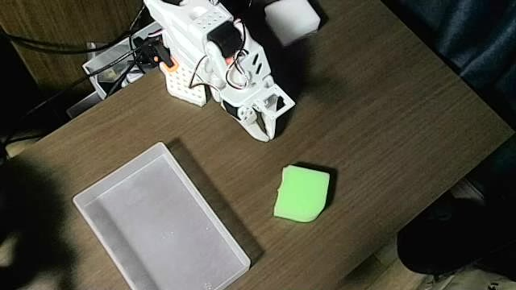
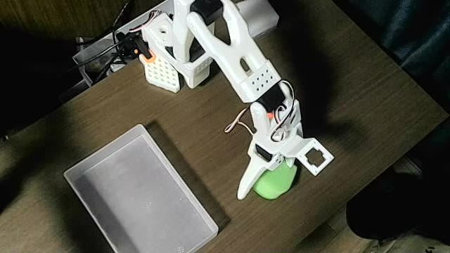
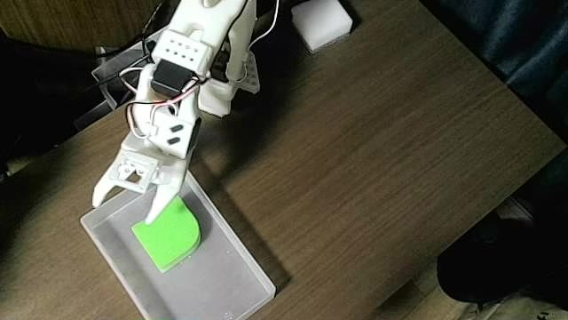
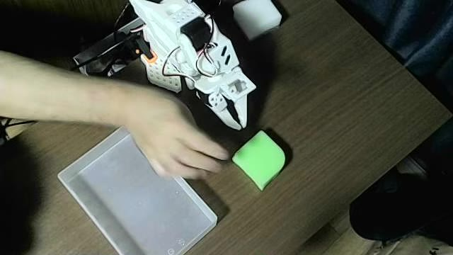
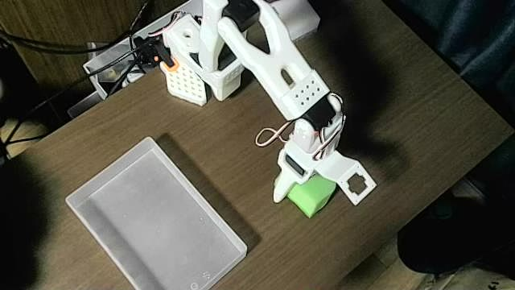
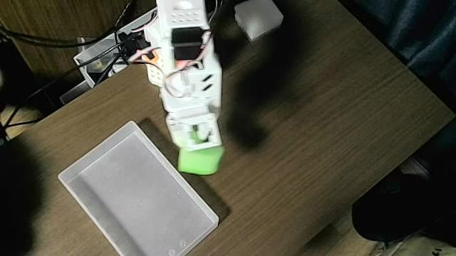
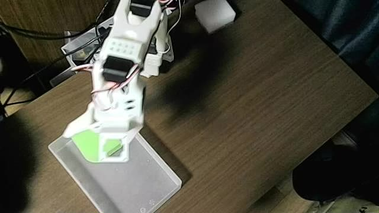

本課題では、低価格なロボットアーム SO-101 と、模倣学習アルゴリズム ACT（Action Chunking with Transformers）を用いて、緑色のスポンジを掴んで箱に入れるタスクをロボットに自律実行させた。人がリーダーアームでフォロワーアームを操作（テレオペ）してデモデータを集め、そのデータで ACT を学習し、学習済みモデルだけでロボットを動かす。
タスクは、製造現場の仕分け・検品工程（良品を箱へ入れ、不良品を除外する作業）を想定して設計した。第1段階として「良品（緑）を箱に入れる」動作を実現し、第2段階として「不良品（白）は箱に入れず横へよける」仕分けへの拡張を予定している。
| タスク | 机上の緑のスポンジ1個を掴み、半透明の白い箱へ入れる（1エピソードにつきスポンジ1個） |
|---|---|
| AIの使い方 | ACT による模倣学習（学習と推論の両方を実施） |
| 想定する応用 | 製造ラインでの部品の仕分け・検品、ピッキング |
| ロボット | SO-101 フォロワーアーム＋リーダーアーム（サーボ STS3215、6自由度：肩2・肘・手首2・グリッパー） |
|---|---|
| 電源 | フォロワー 12V 2A（キット付属）、リーダー 5V |
| カメラ | USBカメラ1台（640×360、30fps、MJPG）。作業領域を斜め上から撮影 |
| PC | Ubuntu、NVIDIA RTX A5000 |
| フレームワーク | LeRobot（commit 22bd7a2f）。ROS2 は使わず、Python から USB 経由で直接サーボを制御 |
| AIモデル | ACT（Zhao ら, 2023） |
ACT は Stanford の ALOHA プロジェクト（Zhao ら, 2023）で提案された模倣学習アルゴリズムである。カメラ画像と現在の関節角度を入力として、今後の行動をまとめて（チャンク単位で）予測する。1ステップずつ予測する手法に比べ、誤差の蓄積が起きにくく、滑らかな動作が得やすい。
lerobot-record でリーダーアームを操作し、カメラ画像と関節角度を 30fps で記録した。lerobot-train で ACT を学習した。lerobot-rollout で学習済みモデルを読み込み、ロボットを自律動作させた。


| データセット | so101_green_test |
|---|---|
| エピソード数 | 10（総フレーム数 5,609、1エピソード平均 約19秒） |
| 観測 | カメラ画像 640×360 ＋ 関節角度 6次元 |
| 行動 | 目標関節角度 6次元（リーダーアームの角度） |
| ステップ数 | 20,000 | バッチサイズ | 8 |
|---|---|---|---|
| 学習率 | 1e-5（バックボーンも 1e-5） | チャンクサイズ | 100 |
| 学習時間 | 約20分（RTX A5000） | 最終 loss | 約 0.13 |
lerobot-rollout（episodic モード、1回 40 秒）で実行した。フォロワーの1ステップあたりの移動量上限 max_relative_target は 20 とした（4章・5章を参照）。
学習済みの ACT モデルだけで、ロボットがスポンジを掴み、箱まで運んで離す一連の動作を自律的に実行できた。




| 試行 | 結果 | 様子 |
|---|---|---|
| 1 | 成功 | 1回目の把持は空振り。自ら掴み直して箱に入れた |
| 2 | 成功 | 一度で把持し、箱に入れた |
| 3 | 未完了 | 把持後、運搬中に箱の手前で落下。掴み直しの途中で記録終了 |
推論時の記録（約60秒）では 3回中2回、箱に入れることができた。空振りや落下の後に、モデルが自分で掴み直そうとする挙動も見られた。
当初は安全のため max_relative_target=5 で推論したが、1ステップの移動量が制限されすぎて動きがかくかくし、スポンジを掴めなかった。ACT は 100 ステップ分の行動をまとめて出力するため、ロボットが目標に追いつけないと予測と実際の動きがずれる。20 に緩めたところ、滑らかに動作し把持に成功した。
単なるピック＆プレースではなく、「良品は箱へ、不良品は除外」という実際の工程を想定した。第1段階（箱入れ）で動作を確立し、色の違いによる仕分けへ段階的に拡張できる設計とした。
max_relative_target を 5 → 20 と調整し、安全性を保ちつつ ACT のチャンク出力に追従できるようにした（4.1）。
/dev/serial/by-id/ の固定パスを使用scripts/env.sh にまとめ、収録・学習・推論をスクリプト化lerobot-rollout、データセット名は rollout_ 始まり、カメラは 640×360 のみ対応など）を記録